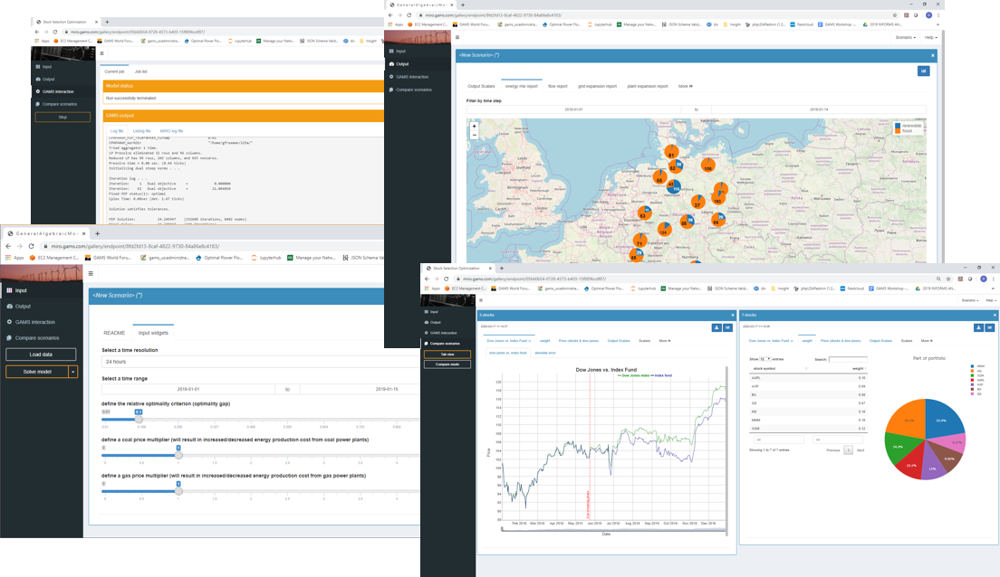
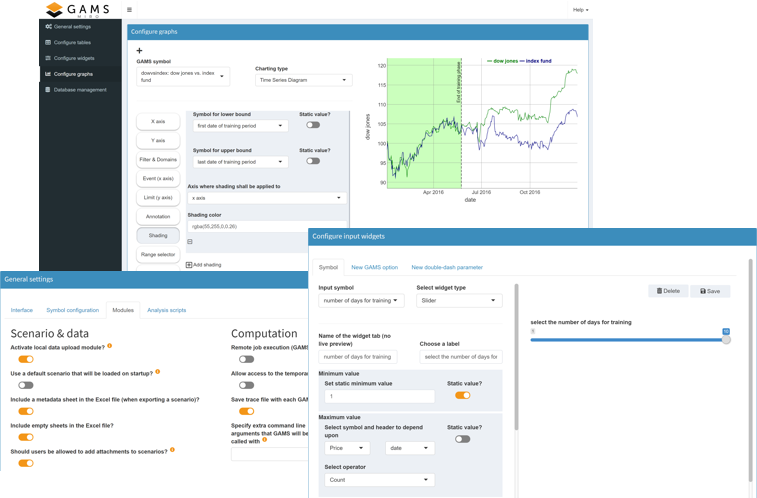
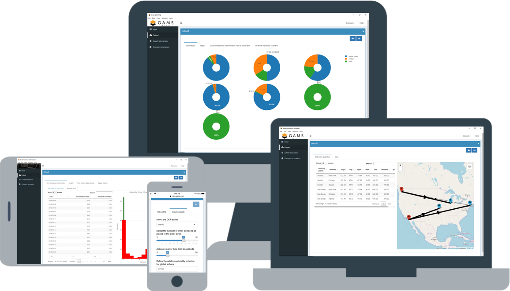
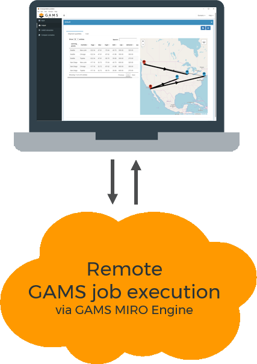
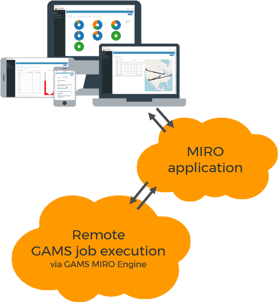
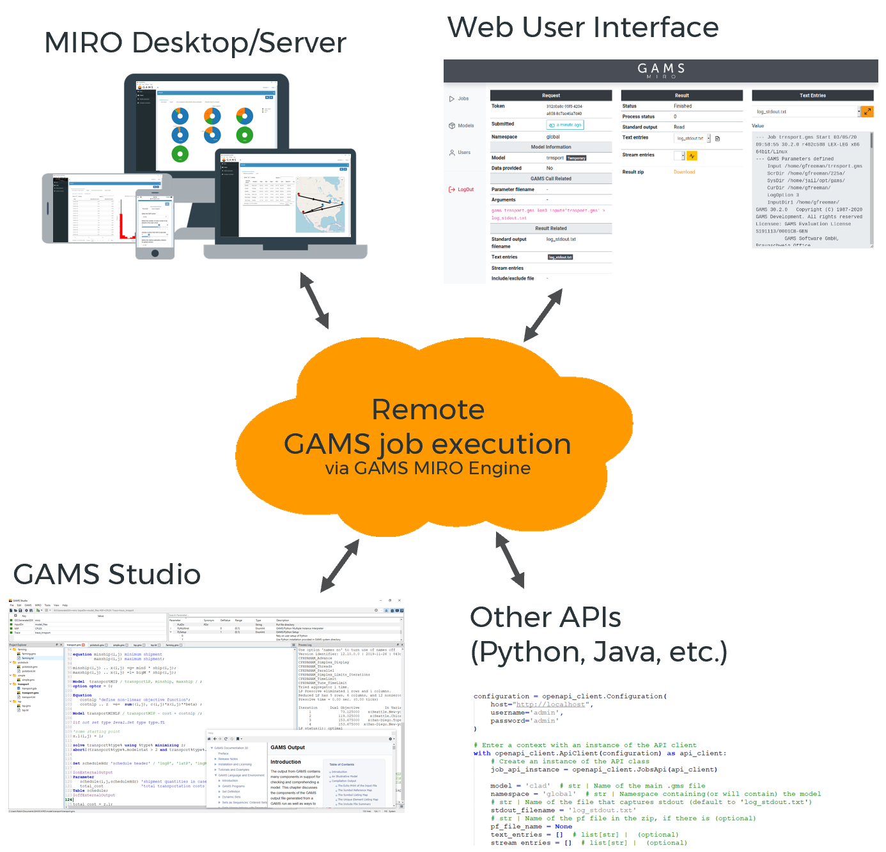

The term GAMS MIRO is used in various situations in this documentation. However, the context should indicate which component is being referred to. In most of the cases the graphical user interface is meant.
Introduction
What is MIRO and what can I use it for?

Get the maximum out of your optimization
GAMS MIRO (Model Interface with Rapid Orchestration) is a deployment environment that enables you to turn your GAMS models into fully-fledged end-user applications that are easy to distribute. An intuitive, user-friendly interface allows you to interact with the underlying GAMS model, quickly create scenarios, compare results and much more. MIRO's extensive data visualization capabilities provide you with the ability to create powerful charts, time series, maps, widgets, etc. with ease.
Rapid setup, highly customizable
You can create your first application within minutes and then develop it step by step. No programming knowledge is required, the focus is rather on providing a wide range of configuration options. If the configuration options are not sufficient for you, you can become creative yourself and implement your own ideas.


Enterprise Setups
GAMS MIRO can be used as a local application, a hybrid of a local application that performs model calculations in a highly scalable cloud setup, up to a pure server setup that can be accessed from anywhere.
For whom is GAMS MIRO designed?
The possible applications of GAMS MIRO are manifold. MIRO is intended for everyone who works with optimization models or wants to make decisions based on those.
Business
Make business decisions based on optimization software without the need for extensive Operations Research or GAMS expertise.
Research
Benefit from MIRO's advanced scenario and data management system that helps you focus on your research.
Teaching
Give a general insight into the topic of optimization or illustrate a specific problem in detail.
Components of GAMS MIRO
GAMS MIRO is the deployment environment for GAMS models. To understand the different components, let's first look at the simplest setup: MIRO is installed locally on a computer that also runs GAMS. The generic term for the MIRO components of this setup is GAMS MIRO Desktop.
Note:
GAMS MIRO user interface
The probably most prominent component is the MIRO user interface (MIRO UI). This shows the classic MIRO application in the browser, where you can modify model input data, execute GAMS jobs and view the results. Also the configuration of the application such as creating graphics and setting general options is done here.

GAMS/MIRO connector
The GAMS/MIRO connector is the interface between GAMS and MIRO and is responsible for their data contract. For communication between GAMS and MIRO this component takes over the data management on the GAMS side.
GAMS MIRO Library
For the app development you only need the components MIRO UI and the GAMS/MIRO connector. The MIRO UI can be accessed via GAMS Studio or the command line. For locally deployed apps another component - the personal MIRO library - is used. All deployed apps can be accessed from here. But also global settings such as the language or the browser to be used are made.


GAMS MIRO Desktop
Boosted by GAMS Engine
You can solve GAMS jobs in the cloud from a local MIRO application. In such a setup, additional components are required. GAMS Engine takes over the entire job management and the associated infrastructure for cloud-based optimization. The MIRO UI and the MIRO library are installed on the local computer. However, since the GAMS jobs are solved in the cloud, the GAMS system no longer runs locally, but as part of GAMS Engine on a server.
GAMS MIRO Server
Everything on a server
In another setup - GAMS MIRO Server - all components run in the cloud. Also in this setup GAMS Engine is responsible for the computation of GAMS jobs. The access to deployed MIRO applications is no longer done via the local MIRO library, but via a slightly modified variant on the server.
Learn more


GAMS Engine
Optimizing in the cloud
GAMS Engine is a REST API designed to run in cloud environments. It is an enterprise-grade system that runs on a server and offers features such as high scalability, load balancing via a job queue, rolling updates and much more. GAMS Engine automatically schedules jobs and assigns them to an available GAMS worker to solve it. Also, it comes with a powerful user management system that allows you to restrict the activities of your users according to your organizational hierarchy.
GAMS Engine can not only be controlled by a MIRO application. Thanks to the use of OpenAPI, clients in various programming languages are available.
Learn more about GAMS EngineThe underlying technology
R
The MIRO user interface is mainly written in R and uses the advanced data processing and extensive visualization capabilities of R to provide its rich functionality.
Docker
GAMS Engine is a product based on Docker, that uses state-of-the-art technology to take care of the entire job management and the associated infrastructure for the cloud-based optimization.